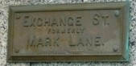
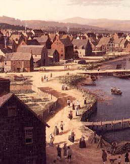

|
by Stefan Bielinski From Albany's earliest days, city streets radiated from the State Street - Market/Court Street intersection. Listed below are early Albany's principal streets with some useful notes and information. City maps (particularly the base maps made by Simeon De Witt in the 1790s) and the historical paintings of James Eights and Len Tantillo provide more perspective on the fabric of Albany's streets and the character of street life. The street-by-street discussion that follows appears in rough order of importance! STATE STREET: Albany's main street for more than 300 years. Sometimes referred to as "Yonker" or "Jonker" Street, State Street ran west from the Hudson River, across Market/Court streets, uphill - through a main intersection at Pearl Street, around the fort, and ended at today's Eagle Street. Above Market Street, this wide boulevard (150 feet) was lined with the city's best houses - the homes of many of Albany's founders and principal personages. By the eighteenth century, these town houses lined both sides of the street.
MARKET STREET: Originally
ran north from the Dutch Church and
was parallel to the Hudson River - continuing out to the Van
Rensselaer Manor House, Schuyler
Flats, and beyond. During the colonial period, it was the most
densely developed Albany street. By the
era of the American Revolution, the homes/shops/stores of many Albany
leaders were located on both sides of the street north to today's
Steuben Street. Widow Schuyler's
house on the east side of Market at Steuben remained in the family
for more than a hundred years. Across the street, was the landmark
home of businessman Dirck Harmanse
Visscher The next block north is the subject of an image
map from an engraving. The west side of the block running north
from State has been articulated as a cityscape.
COURT STREET: Originally a short street of two blocks that ran south from the Dutch Church to the City Hall. Old Court Street was intersected by narrow Beaver and Hudson Streets that provided access to the waterfront. Beyond Hudson, Court Street opened out on to the flood plain as it ran past the ruins of old Fort Orange. During the 1790s, the street was straightened and extended south into the pastures. In 1815, it was renamed South Market Street Today, it is called Broadway. During the seventeenth century, Court Street was the center of the city's political and commercial life. By the mid-eighteenth century, it was defined by the enlarged church and city hall and included the now smaller homes of business and tradesmen as the city elite had mostly relocated along State and Market Streets. PEARL STREET: A traditional residential street that ran north from the Elm Tree Corner, across Maiden Lane, Steuben, and Columbia Streets. For more than a century, Pearl Street was home to the Lansings, Bleeckers, Cuylers, Rosebooms, and other prominent early Albany families. Vanderheyden Palace was its most outstanding residence. Pearl extended north through the stockade at Roseboom's Gate! It continued down into the Foxes Creek Ravine where it was lined with working class homes. The opening of the new Dutch Church in 1798 extended residential development on Pearl Street to the city line and beyond. Pearl Street was re-named North Pearl about 1814 and continued north - converging with North Market Street beyond the Van Rensselaer Manor House.
SOUTH PEARL STREET: Originally, a path running from State Street - south to the Pastures. Modest homes were laid out along it south to the stockade beginning in the early 1700s. It ran along the foot of Gallows Hill. From the stockade at Hudson Street - south to the Beaverkill, that section of the street first was settled following the death of property owner Hendrick Hallenbeck in 1766. By the end of the War for Independence, it was called Washington Street reputedly because George Washington walked along it to Schuyler Mansion in 1783. The street continued out of the city past Cherry Hill and into Bethlehem. In 1815, it was renamed South Pearl Street and represented the principal southern route out of the city. The first Lutheran and Presbyterian churches were located on this high street just south of State Street. South Pearl Street was cut by both the Ruttenkill and the Beaverkill. As a path for cattle headed for the Pastures, it was sometimes called "Cow Street." HUDSON STREET: Ran west from the river past city hall, across Court Street, Green, and South Pearl. Its route marked the southern line of the first city stockade. By the time of the Revolution, close-set, working-class homes gave Hudson Street a settled quality that was interrupted by the Dutch Reformed cemetery located on the south side of the street between Green and South Pearl. By the early 1800s, Hudson Street extended west as far as the Washington Park cemetery. Today it continues uptown to Allen Street and is called Hudson Avenue. GREEN STREET: This narrow street ran south from State, through Beaver, Hudson, and Division Streets, across Lydius Street, and extended into the pastures. In 1771, the British publishers of the Albany Gazette corrupted the reference to "Queens Street." Before 1800, this narrow residential and service street was the heart of a working class neighborhood called "Cheapside." BEAVER STREET: A narrow east-west street from Court, through Green Street, and ending on South Pearl Street near the Presbyterian Church and the Ruttenkill. Tradesmen, laborers, and tavern/innkeepers lived on eighteenth century Beaver Street. Richard Cartwright's house and King's Arms tavern were prominent features. The intersection of Beaver and Green Streets was the heart of a working class neighborhood called "Cheapside" or "Southside." By the early 1800s, a number of multiple-residence dwellings (boardinghouses) were located on the street. NAIL (Lutheran) STREET: A narrow east-west street running uphill from the north side of the Lutheran church on South Pearl, west- through Lodge and leading to Wendell's pastures. It was first shown on the Yates map of 1770 but not named until the De Witt map. Today, it is called Howard Street. MAIDEN LANE: A narrow east-west street beginning at the Maiden Lane ferry, running across Dock, Market, Middle Alley, Pearl, Barrack, Lodge, behind the new jail, and outletting onto the "King's Highway" or Schenectady Road (Lion Street - today's Washington Avenue). Originally called "Rom Street," Maiden Lane was a service street providing access to the backsides of the prominent homes and buildings on State, Market, and Pearl Streets. Stables, sheds, and some modest residential buildings were located on Maiden Lane. For a time, Afro Albanian matriarch Dinnah Jackson lived at 31 Maiden Lane in a building behind the Market Street home of Chancellor John Lansing, Jr. STEUBEN STREET: Ran west from the river - across Market and Pearl and uphill to the hospital. Named for Baron Von Steuben, it marked the route of the northern leg of the first city stockade. We have not encountered a name for it before it was called "Steuben." A residential street where the Glen (Cuyler) house stood (at Chapel) as early as the 1720s.
COLUMBIA STREET: Ran west from the river near the north dock. It was located along the ridge above the Foxes Creek ravine. It was a block north of the original stockade line and was built on during the mid-1700s. By the last decade of the eighteenth-century, it was a fringe residential street ending at North Pearl. Afterward, it extended farther uphill to Eagle Street. DOCK STREET: Evolved from a path along the Albany waterfront. By the 1770s, some buildings (including the new homes of sailmaker Abraham Eights and skipper Stewart Dean) had been built east of an informal road that ran from about Beaver Street north possibly to Columbia Street. It may have been the waterside route of convenience connecting the city docks. By the 1790s, it was a real road called "Dock Street" and connected Hudson and Steuben Streets. Dock Street was west of and parallel to Quay Street. MIDDLE ALLEY: A narrow, service street that ran north-south from Columbia to State Street. It was set between North Market and North Pearl Streets. It may also have been called the "Waggon Way." Today, it is called James Street - probably after early nineteenth century merchant and real estate mogul William James. Shibboleth Bogardus was one of the few mainliners who actually lived on this street - owning a home at its north end in 1729. LODGE STREET: Ran north-south across State Street, across, Maiden Lane to the Masonic Hall, and to the hospital. South from State, it led to the Ruttenkill ravine. CHAPEL STREET: Originally called Barrack[s] Street, it ran north from State Street across from St. Peters to Fox Street. During the 1760s, lots were leased for land "where the barracks formerly stood." Later, the street was continued north to Patroon Street. By the end of the War for Independence, it was a residential, back street and the home to a number of Scottish immigrants including carpenter Alexander Forsyth. DIVISION STREET: Formerly called Bone Lane, it ran west from the river up to South Pearl Street between Hudson and Hamilton Streets. Maps show it to have been of variable widths. Probably it was not called Division Street until the 1800s. It was the first street south of the colonial stockade. LION STREET: The widest of the east-west "animal streets" first shown on the De Witt map of 1794. "Lyon Street" ran west from the Public Square along the route of the King's Highway and today's Washington Avenue. Previously known as "King('s) Street" when lots were sold (leased) there in August 1778, by the 1790s, houses began to dot its route up to Lark Street. The assessment roll for 1799 also valued the several dozen lots that had been laid out along its route. Samuel Bromley's inn located on the corner of Lion and Dove (later 140 Washington Avenue), also was shown on the De Witt map of 1794 and on the assessment roll as well. PINE STREET: Originally a short (east-west) cross street leading from the Public Square to Barrack (Chapel) Street. Today, it continues east to North Pearl Street. PATROON STREET: Albany's original northern boundary line, it ran from the river across Market Street along the path of today's Clinton Avenue. It's name probably relates to it as a dividing line between Albany and Rensselaerswyck. When the city line was extended north in 1815, the street name was changed to Clinton Avenue. By the mid-nineteenth century, its was one of Albany's most populated residential streets. FOX STREET: Sometimes called the "Vozenkill," Fox(es) Street ran west from North Pearl Street, across Chapel Street, up the ravine, and along the route of Foxes Creek. Later, the stream was piped and the street above was called Canal Street. Today, it is Sheridan Avenue. Along the south side of the street, a steep ravine kept Fox Street significantly "below" the streets in the upper part of the core city. Tanning pits lined the north side slope into the nineteenth century. ORANGE STREET: Ran west from the river at the foot of the North Dock. Ran across Market; crossed North Pearl Street; and continued uphill for many blocks. This street cut through the north side slope of Arbor Hill. Above Lark Street, Orange Street once was known as Hare Street. By the late eighteenth century, the sections near where it crossed Market Street were closely settled mainly by recently arrived tradesmen, laborers, and by Willie Winne - the "penny postman" who lived at 57 Orange Street. VAN SCHAICK STREET: Ran west from Pearl Street for two blocks between Fox and Orange Streets. It ran along the south side of the Pearl Street Dutch church. Not shown on early maps, it would have been a continuation of Van Tromp Street. It probably was named for Gerrit W. Van Schaick who owned a large tract of land along Foxes Creek. During the first decades of the 19th century, it was densely inhabited by newcomers and transients living in cramped and crowed rooming houses. The stately home of Justice Peter D. Beekman located at 21 Van Schaick stood in contrast to these ramshackle buildings. Today, it is called Monroe Street.VAN TROMP: A short, residential street running between North Pearl and Market Street along the south side of Foxes Creek. It was laid out by 1770. In 1813, eleven individuals with Tromp Street addresses were listed in the first city directory. Merchant John Fondey, Jr. lived at the Market Street corner. Van Tromp Street exists today in the same location! EAGLE STREET: Originally called "Queen Street," it was shown as Eagle Street on the De Witt map of 1790. This north-south street ran from today's Columbia to Morton Street and represented the westernmost "city street" during the eighteenth century. The Public Square and first municipal cemetery were located west of it. HALLENBECK STREET: Probably named after property owner Hendrick Hallenbeck who died in 1766, this wide boulevard ran north-south from about Plain Street to the Beaverkill. It first was shown on the De Witt map of 1790 and named on the map of 1794. Perhaps it served as the western boundary of the Hallenbeck lands! In 1818, it still was called "Halenbake Street" and ran from Beaver Street to the Beaverkill. By 1857, its name had been changed to Grand Street - its present-day title. PLAIN STREET: Between Hudson and Hamilton, this side street ran west from South Pearl up the hill toward Eagle Street. In 1813, it was one of the streets that was to be paved. In that year, the city directory showed nine Plain Street addresses. Today, it has been covered over by the Empire State Plaza Arterial. LYDIUS STREET: Probably a nineteenth century reference. Named for Dominie Johannes Lydius, Lydius Street ran west from the Hudson River along the route of today's Madison Avenue. Previously (1790), it was referenced in deeds and shown on the De Witt map as "Wolf Street." Later, the extension of this wagon road became the "Great Western Turnpike" - today's US Route 20. By the early 1800s, houses appeared along eastern Lydius Street forming several blocks below South Pearl Street. Those numbered addresses appear in the earliest city directories. Heading uphill above South Pearl, the address was "Lydius continued." NORTON STREET: Formerly called Church Street and, until 1835, Store Lane, it ran east from South Pearl Street and ended at Green Street. It is shown as "Nail Street" on the De Witt maps. The Ruttenkill ran beneath it near the Presbyterian church. The street probably was named for a railroad executive named Norton (and not early Albany resident Samuel Norton) whose offices later covered almost an entire side of the street. MARK LANE: A short, service road located between State Street and Maiden Lane. It ran west from the river, across Dock Street, to Market Street. James Bloodgood's house and property ran along its north side. Gerrit Van Schaick's lots extended along the south side. In 1813, a number of cooperages had Mark Lane addresses. Subsequently, it was called "Exchange Street." Today, it is a driveway separating the "old" post office and the Federal Building on Broadway. COW LANE: The name of several north-south streets (originally "cow paths") leading to the Pastures in the South End of Albany. The most often usage referenced the "Cow Lanes" that ran between Hudson and the Pastures and is shown as a narrow pathway on the De Witt Map of 1794. In 1805, a local newspaper printed this description: "Cow lane, extending from the intersection of Grass lane with Hudson street, to Ludlow's property adjoining Lydius street, [and changed its name] to . . . Union Street." GRASS LANE: Originally extended from Hudson to Lydius. By 1813, its name had been changed to Liberty Street - the name it retains today. In 1813, more than forty Liberty Street addresses were shown in the first city directory. MONTGOMERY STREET: Initially ran north-south from Steuben to Columbia Street and between Market Street and the river. Later, it extended north for many blocks into the heart of the lumber district. A number of houses and other structures along Montgomery Street were destroyed by fire in August 1797. Water Street: Ran parallel to the river and east of North Market Street. Exists today only for one block between Orange and Columbia Streets. However, two hundred years ago, it encompassed parts of what later became Dean and Quay Street. Road Street: Sketched in on some eighteenth century maps, its specific purpose during that time is unclear. This pathway was shown but not labeled on the 1818 Van Allen map. What came to be known as "Road Street" ran basically east to west probably on the dry ground along the southern base of the Foxes Creek ravine - perhaps veering off from today's Sheridan Avenue and running to Dove Street and maybe beyond. See the recent illustrated blog by Don Rittner. Nicely described by Paula Lemire. Road Street State parking lot. In 2010, about ten Road Street parcels were described on city tax documents. Can't resist this Google map from 2011. QUAY STREET: Beginning sometime after the Revolution, a crude roadway began to become visible along the Hudson riverfront. The riverside edge of it became the city seawall. The land was reclaimed from the river bottom by filling in with dirt and other material carted from a variety of local locations. First identified by name on city maps about 1790, Quay was early Albany's easternmost street. The island that would enclose the Albany basin and become the actual riverfront would be added by 1820. The third ward assessment roll for 1809 delineated ownership of property along the Quay.
Wikipedia exposition on Albany Streets Street Names altered [1805] Changes in Street Names [1890] Studies for Albany by Arnold Brunner (1914) Aerial view of the waterfront today
West of Eagle Street, upper State Street was called Deer Street. The first municipal cemetery was bounded on the north by Deer Street. Detail of one of the Bicentennial Tablets - an old plaque from a photo found on an interesting "blogspot" that has become a regular source of inspiration for our overall webwork. It is presented here in this way to see who's watching. first posted 7/28/00; last updated 2/13/15 |
{kind=link}
{kind=link}
{kind=link}
{kind=link}
{kind=link}
{kind=link}